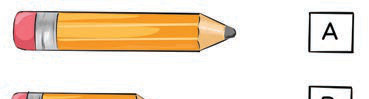
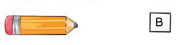
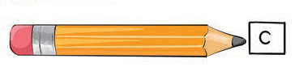
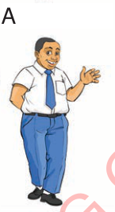
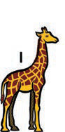
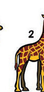
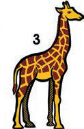

Speaking/signing and writing practice
Study the following pictures and answer the questions that follow.
2
1
3
1.Which tree is taller than tree 1?
[[blank:item-1]] are taller than [[blank:item-2]].
2.Which tree is taller than tree 2?
[[blank:item-3]] is taller than [[blank:item-4]].
3.Is Tree 3 taller than Tree 2?
(Yes, No) [[blank:item-5]]
4.Is Tree 1 taller than Tree 3?
(Yes, No) [[blank:item-6]].
Tree [[blank:item-7]] is the tallest of all.
5.Which pencil is the longest of all three pencils below?




AB
1.Which person is fatter than the other?
[[blank:item-9]]is fatter than [[blank:item-10]].
2.Which person is taller than the other?
[[blank:item-11]] is taller than[[blank:item-12]].
3.Is person A taller than person B?
(Yes, No) [[blank:item-13]]
4.Is person A fatter than person B?
(Yes, No) [[blank:item-14]]
5.Which of the following animals is the tallest?


